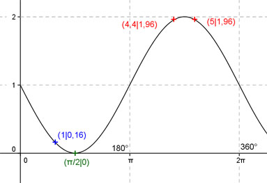

Aufgabe 194
Ergänzen Sie die Wertetabelle für x zwischen 0 und 2π:
y = sin(-x) + 1
x 1 4,4 oder 5
y 0,16 1,96
Berechnung der Nullstellen:
sin(-x) + 1 = 0 |-1 -->
sin(-x) = -1 -->
-x = arc sin(-1) -->
-x = -π/2 --> x = π/2 + k * 2π
x = π/2 oder 90°.

Funktionswert an einer Stelle x ermitteln:
x = 1
f(1) = sin (- 1) + 1 = sin (-57,3°) + 1 = 0,16 gerundet.
Berechnung der x-Werte für y = f(x) = 1,96:
f(x) = 1,96 eingesetzt,existiert zweimal
zwischen π und 2π bzw. zwischen 180° und 360°.
sin(-x) + 1 = 1,96 |-1 -->
sin(-x) = 0,96 -->
-x = arc sin 0,96 = 1,29 |*(-1)
x = -1,29,
liegt nicht im Bereich zwischen 0 und 2π -->
4,4 * 180°
x1 = (π + 1,29) = 4,4 oder ------------ = 252,1°
π
x2 = (2π - 1,29) = 5 oder 286,5° gerundet.
(siehe Einheitskreis).